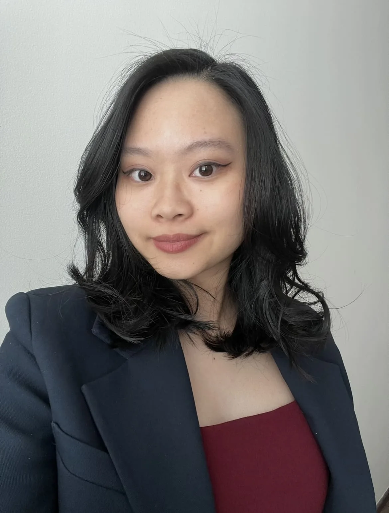

Jmenuji se Chi [:Či]. Jsem absolventka Vysoké školy ekonomické v oboru Aplikovaná informatika. Studium mě naučilo pracovat samostatně i v týmu a přistupovat k věcem analyticky.
Během studia jsem se začala zajímat o webové technologie. Baví mě místo, kde se potkává design a kód – navrhovat weby, které dobře vypadají a zároveň dobře fungují.
Ovládám HTML, CSS a základy JavaScriptu. Mám za sebou kurz Responsive Web Design od freeCodeCamp a několik vlastních projektů. Absolvovala jsem kurz UX design a mám zkušenosti s Figmou.
Chci se věnovat tvorbě webů, které reprezentují identitu značky a stojí na principech dobrého UX/UI designu. Mezi mými silnými stránkami patří důslednost a ochota na sobě pracovat.

Dovednosti
HTML · CSS · JavaScript (základy) · Figma · UX Design